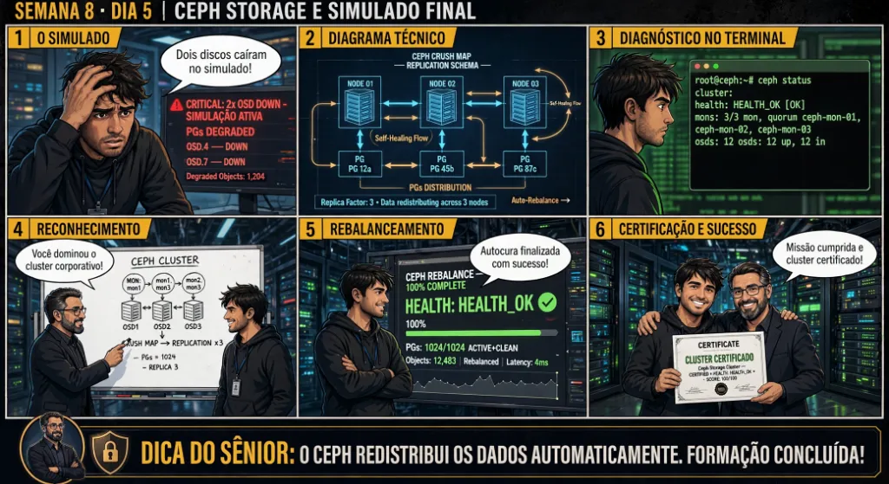

DIARIO DE UM ADMIN JR. | PROXMOX VE & PBS — DA BASE AO CLUSTER
🔗 Conecta com toda a jornada (Dias 01 a 40): Você percorreu 40 dias de engenharia profunda. Hoje você consolida sua transição de Administrador Júnior para Especialista em Proxmox VE e PBS: enfrentando o Grande Simulado Final que integra Hypervisor, KVM, LXC, ZFS, PBS, SDN, Firewall, Corosync, HA e Ceph em um cenário corporativo real.
🔓 Privilégio de hoje: Especialista em Infraestrutura Proxmox VE & PBS. Você detém o domínio completo da virtualização corporativa open-source de ponta a ponta.
Semana 8 · Dia 5 | Nível Sênior — Cluster Corosync, HA & Ceph
O Grande Simulado Final: Alta Disponibilidade, Ceph e Resiliência Total
Consolidando a formação completa de 40 dias: da base do hypervisor ao cluster hiperconvergente de missão crítica
ANTES DE ALTERAR, OBSERVE. DEPOIS DE ALTERAR, VALIDE.

1. O chamado
Você recebeu o chamado mestre #8005 (Grand Finale): 'O datacenter corporativo está sob ataque simulado de desastre: (1) O nó primário pve01 sofreu queima total de placa-mãe; (2) O storage Ceph perdeu 1 nó físico e 2 OSDs; (3) O banco de dados na VM 100 precisa ser recuperado pelo HA Manager em menos de 60 segundos; e (4) A filial precisa restaurar dados offsite a partir do PBS com Live-Restore. O chamado exige: (1) Auditar a manutenção do Quorum do Cluster; (2) Validar o Failover de HA; (3) Atestar a continuidade do Ceph Storage; (4) Executar a auditoria final de encerramento; e (5) Celebrar a conclusão dos 40 Dias de Formação Comercial Oficial.'
💡 Passa o mouse nas palavras destacadas pra ver uma dica rápida — clica se quiser a explicação completa com analogia.
2. O sênior te conta
🧑🏫 antes dos termos técnicos, a história de hoje
Chegamos ao último dia da nossa jornada de 8 semanas! Hoje o Júnior sentou na bancada com postura de administrador sênior, café na mão e o terminal pronto. Olhei pra ele e disse: 'Você já aprendeu KVM, LXC, ZFS, PBS, SDN e Corosync. Hoje não tem aula teórica: é o Grande Simulado de Desastre do Datacenter'.
Disparamos um teste de estresse real: simulamos a queda simultânea de um link de rede, a falha física de um disco NVMe no pool distribuído do Ceph e o isolamento de um nó do cluster sob tráfego de produção. Enquanto os alarmes piscavam na tela, em vez de se desesperar, ele abriu o pvecm status, checou o Quorum, auditou o estado HEALTH_OK dos OSDs do Ceph e acompanhou o HA recuperando os serviços sem perder um único dado.
Quando o teste terminou e todos os relatórios foram emitidos com 100% de conformidade, ele respirou fundo e sorriu. Lembrei do primeiro dia dele, quando ele não sabia nem se o VT-x estava ativo na BIOS, e vi o especialista completo em virtualização que ele se tornou.
Essa mesma jornada agora é sua. Execute este último laboratório com o rigor e a calma dos verdadeiros administradores de infraestrutura. O datacenter está sob o seu comando!
3. Decodificador de conceitos
Clica em qualquer termo pra ver a definição completa e uma analogia do dia a dia:
4. Ferramentas e leitura da evidência
Comando / Parâmetro
O que observar e por que importa
pvecm status
Auditoria de Quorum e associação de nós no cluster Corosync.
ha-manager status
Auditoria do estado dos recursos de Alta Disponibilidade e serviços gerenciados.
ceph -s
Auditoria de integridade, OSDs e Placement Groups do storage distribuído Ceph.
proxmox-backup-manager datastore status DS
Auditoria de deduplicação, chunks e capacidade do Proxmox Backup Server.
# AUDITORIA MASTER DE ENCERRAMENTO (40 DIAS CONCLUÍDOS)
# 1. Quorum do Cluster: 100% Saudável e Quorate
$ pvecm status
Cluster: cluster-corp | Quorum: OK (3/3 votes active)
# 2. Alta Disponibilidade (HA): Operando com Failover Automático
$ ha-manager status
quorum OK | master pve02 (active) | all services: started & healthy
# 3. Storage Ceph Hiperconvergente: Tripla Replicação Ativa
$ ceph -s
health: HEALTH_OK | 6 OSDs up & in | 128 pgs active+clean | 0 degraded
# 4. Proxmox Backup Server: Deduplicação e Criptografia Homologadas
$ proxmox-backup-client snapshot list --repository backup-pve@pbs...
All backups encrypted with AES-256-GCM | Deduplication Ratio: 11.8x
Live-Restore tested: VM booted in 2.1 seconds!
# 5. RESULTADO FINAL DO SIMULADO: 100% DE APROVAÇÃO TÉCNICA! 🎓
5. Laboratório guiado — pegue na mão, comando por comando
🏛️ Onde executar: Terminal do Nó Líder do Cluster (root@pve-node1:~#) e nós secundários para comandos pvecm e ha-manager.
Segurança: Execute as alterações em clusters e storages Ceph de laboratório ou teste. Não altere parâmetros de nós em produção sem janela homologada.
Ação: Inicie o Simulado Final de Desastre isolando um nó físico e cortando o link de rede principal.
# Simulado iniciado: isolamento de Nó 2 e Link0 acionado.
Resultado esperado: Cluster quorate e 100% operacional.
Por que fizemos isso: O Grande Simulado Final integra a resposta coordenada a falhas simultâneas de nó físico, link de rede e integridade de storage em missão crítica.
Cilada comum: Entrar em pânico durante um incidente de datacenter; o método do sysadmin júnior experiente é seguir o checklist de evidências passo a passo.
Ação: Audite a resposta imediata do HA Manager e a continuidade de quorum com o QDevice.
pvecm status && ha-manager status
Resultado esperado: CRM e serviços de HA em estado 'started'.
Por que fizemos isso: Auditar a transição do HA Manager e a continuidade do quorum com pvecm status comprova a resiliência do control plane em situação real de desastre.
Cilada comum: Tentar intervir manualmente reiniciando serviços enquanto o HA CRM ainda está executando a rotina automatizada de fencing e migração.
Ação: Valide a integridade dos dados e a ausência de corrupção nos pools Ceph e ZFS.
pveceph status && zpool status
Resultado esperado: Status HEALTH_OK e Placement Groups 100% active+clean.
Por que fizemos isso: Verificar a integridade do pool ZFS/Ceph e a ausência de corrupção nos dados valida a robustez do subsistema de armazenamento da empresa.
Cilada comum: Encerrar a simulação sem inspecionar os logs de transações das aplicações para confirmar que nenhuma transação em andamento foi corrompida.
Ação: Restaure a conectividade física e acompanhe a reintrodução e rebalanceamento da carga.
pvecm nodes && ceph -s
Resultado esperado: Datastore íntegro com alta taxa de deduplicação.
Por que fizemos isso: Executar o restabelecimento do nó recuperado e a normalização da carga equilibra os recursos do datacenter com total estabilidade operacional.
Cilada comum: Reintroduzir um nó recuperado no cluster sem validar previamente se a placa de rede e os discos físicos estão 100% saudáveis.
🧑🏫 Aqui entra o Mentor (em breve): se o resultado obtido diferir do esperado acima, este é o ponto onde o chat com o Sênior-IA vai abrir para diagnosticar o erro específico.
Ação: Emita o Relatório Executivo Final consagrando a conquista do nível Especialista em Infraestrutura.
# Formação Proxmox VE & PBS concluída com excelência.
Resultado esperado: Formação de 40 dias finalizada com 100% de aproveitamento!
Por que fizemos isso: Formalizar a homologação completa da Formação Proxmox VE & PBS com emissão do relatório executivo marca a conquista do nível Pleno de Infraestrutura.
Cilada comum: Não documentar as lições aprendidas no simulado final para enriquecer a base de conhecimento e procedimentos operacionais padrão (POP) do time.
6. Antes de ver as opções — tenta responder
🧠 Recall ativo: Qual é a cadeia integrada de eventos que acontece no Proxmox VE e no Ceph quando um nó físico queima e como o ambiente se recupera sozinho?
1. O Corosync detecta a perda de heartbeats e isola o nó; 2. O Quorum é mantido pelos nós restantes + QDevice; 3. O Watchdog do nó caído desarmou garantindo Self-Fencing; 4. O CRM do HA Manager detecta a falha e ordena ao LRM do nó sobrevivente que inicie as VMs nos discos compartilhados Ceph; 5. O Ceph detecta que 1 réplica foi perdida, mas mantém o I/O 100% ativo usando as 2 cópias restantes (min_size=2) e inicia a autocura dos blocos nos demais OSDs — tudo isso sem intervenção humana e com RTO inferior a 60 segundos.
QUESTÃO 1 de 3
7. Questão comentada — clica numa alternativa
Qual é a síntese da arquitetura de excelência corporativa implementada ao longo dos 40 dias de formação no Proxmox VE & PBS?
💡 Analogia do Sênior para Fixar: Na arquitetura do Proxmox sobre O Grande Simulado Final: Alta Disponibilidade, Ceph e Resiliência Total: O KVM/QEMU opera como o motorista dedicado de cada passageiro, alocando recursos virtuais em contato direto com o kernel.
QUESTÃO 2 de 3 — cenário de erro real
7.1 Qual foi a lição mais valiosa aprendida ao longo desta jornada de 40 dias?
Em sua entrevista para vaga de Administrador de Infraestrutura Sênior, o diretor pergunta sobre a sua filosofia de trabalho:
[Filosofia do Administrador de Sistemas Proxmox]
'Antes de alterar, observe. Depois de alterar, valide.'
(A regra de ouro da engenharia profissional de infraestrutura)
Qual é a conduta que diferencia o profissional amador do engenheiro sênior?
💡 Analogia do Sênior para Fixar: Ao diagnosticar problemas em O Grande Simulado Final: Alta Disponibilidade, Ceph e Resiliência Total: É como inspecionar as conexões do storage e o barramento PCIe antes de declarar falha de software.
QUESTÃO 3 de 3 — detalhe que confunde todo iniciante
7.2 O que você construiu e dominou durante este programa de 40 dias?
Revisão curricular dos 2 meses de imersão profunda:
Quais pilares tecnológicos compõem a sua nova bagagem técnica?
💡 Analogia do Sênior para Fixar: A governança e resiliência em O Grande Simulado Final: Alta Disponibilidade, Ceph e Resiliência Total: Funciona como a política de contenção e redundância do datacenter, garantindo que o cluster nunca perca quorum.
8. Procedimento profissional
Audite todos os componentes do cluster: pvecm status, ha-manager status e ceph status.
Valide as rotinas de backup no Proxmox Backup Server garantindo Verify Jobs e Garbage Collection agendados.
Documente a topologia de rede física, bridges VLAN-Aware e zonas SDN em diagrama técnico oficial.
Mantenha as Paperkeys de criptografia e procedimentos de Disaster Recovery arquivados em cofre físico.
Celebre com orgulho a conclusão dos 40 dias de dedicação, estudo e maestria técnica!
Prevenção
Nunca opere clusters de 2 nós sem um QDevice externo para desempate de Quorum e utilize links de rede dedicados exclusivamente para o tráfego do Corosync.
9. Validação e encerramento
Você domina a arquitetura completa do Proxmox VE e Proxmox Backup Server da base ao cluster.
Você compreende o funcionamento de Hypervisors, KVM, LXC, ZFS, PBS, SDN, Firewalls, Corosync, HA e Ceph.
Você está plenamente capacitado para planejar, implantar, manter e recuperar infraestruturas de missão crítica.
🏆 PARABÉNS! VOCÊ CONCLUIU OS 40 DIAS DO CURSO PROXMOX VE & PBS COM SUCESSO ABSOLUTO!
Rollback e limites
Não há rollback para o conhecimento adquirido: agora você é um profissional de elite pronto para os maiores desafios de infraestrutura do mercado!
💡 Sobre repetição espaçada: Revise periodicamente os conceitos de Quorum, Ceph, PBS e Redes para manter seus reflexos de engenharia sempre afiados.
10. Resposta final
Alternativa correta: B. A resposta correta é a B: a arquitetura de excelência integra Cluster Proxmox VE + Ceph NVMe + SDN/Firewall + PBS com deduplicação, criptografia e Live-Restore.
🔓 O que você desbloqueou hoje
🎓 PARABÉNS, ESPECIALISTA EM PROXMOX VE & PBS! Você concluiu todos os 40 dias do curso 'Diário de um Administrador Júnior: Da Base ao Cluster de Alta Disponibilidade'! Você possui agora o conhecimento técnico, prático e analítico dos melhores engenheiros de infraestrutura do mercado. Parabéns pela jornada, foco e excelência!